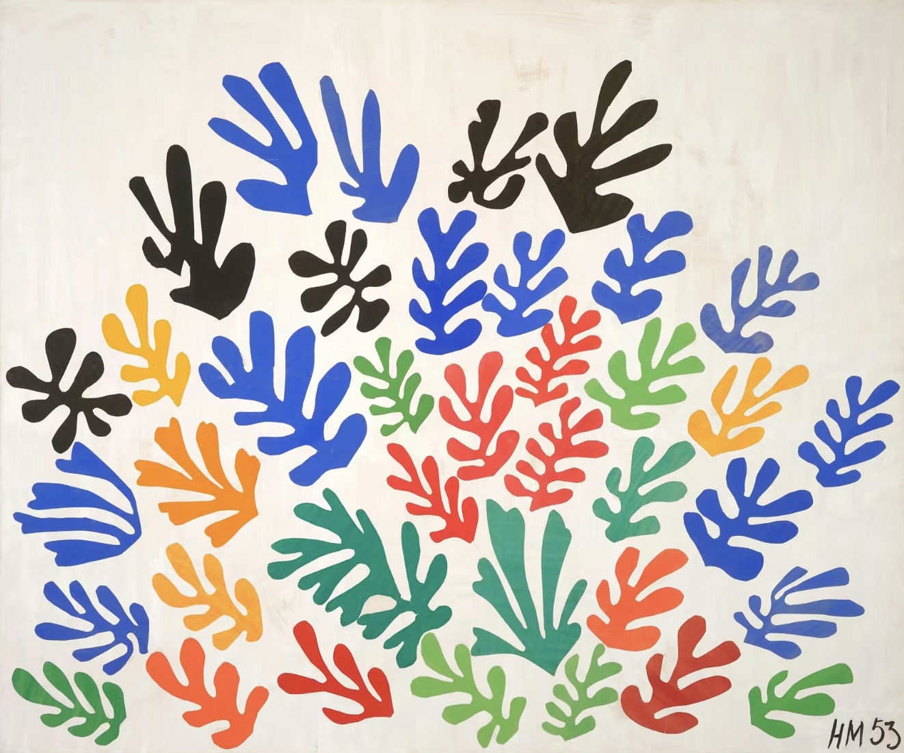
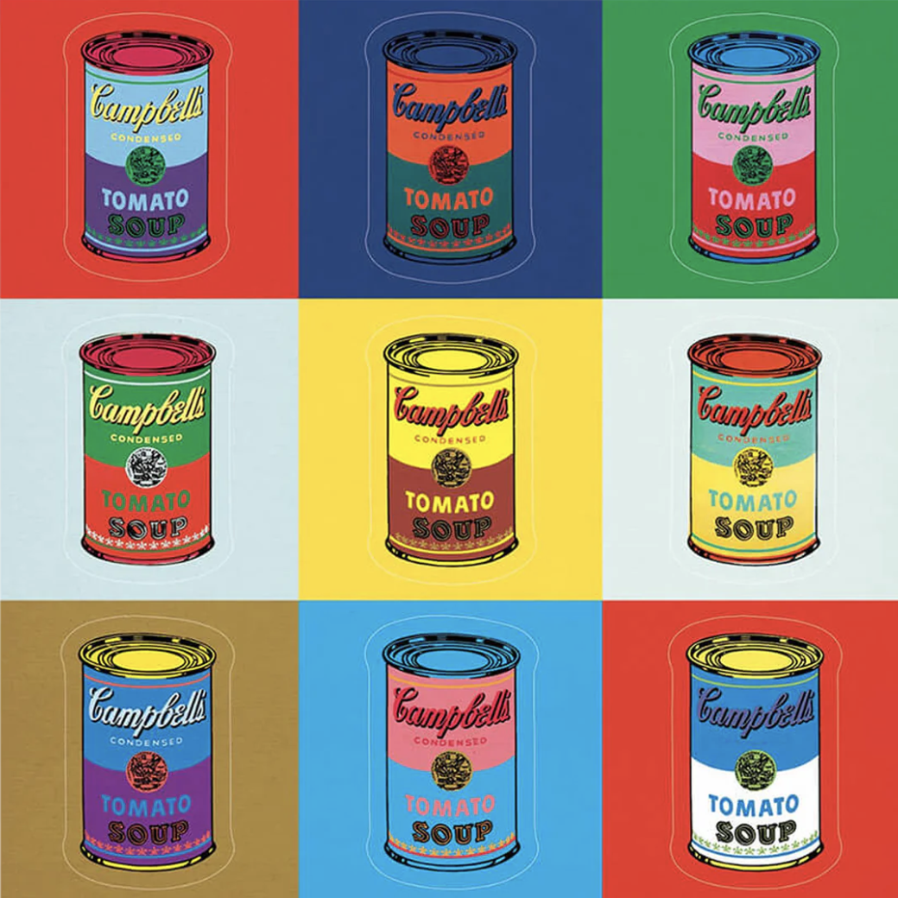
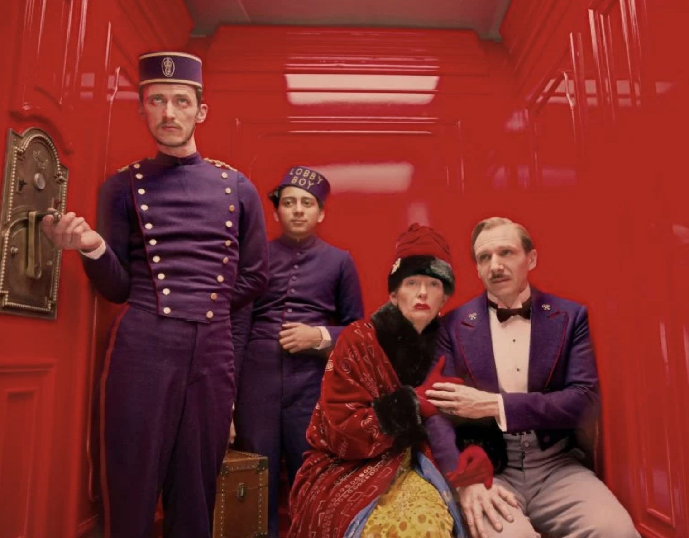

Drop image here
Select an image or drag in your own



Axis Formulas
Coordinate System
Cartesian (Rectangular)
Polar (Circular)
Polar Extension
None (Circle only)
Repeat (Tile pattern)
Mirror (Reflect pattern)
Invert (Flip radius)
X-Axis Scroll
0%
Auto
ms
Y-Axis Scroll
0%
Auto
ms
X-Axis (Horizontal)
Hue (color wheel)
Saturation (gray → vivid)
Lightness (dark → bright)
Red channel
Green channel
Blue channel
Y-Axis (Vertical)
Saturation (gray → vivid)
Lightness (dark → bright)
Combined (S+L)/2
(1-S) × L (original)
Hue (color wheel)
Red channel
Green channel
Blue channel
Animation Order
Hue (color wheel)
Saturation (gray → vivid)
Lightness (dark → bright)
Red channel
Green channel
Blue channel
Animate
Download GIF
FPS: 60